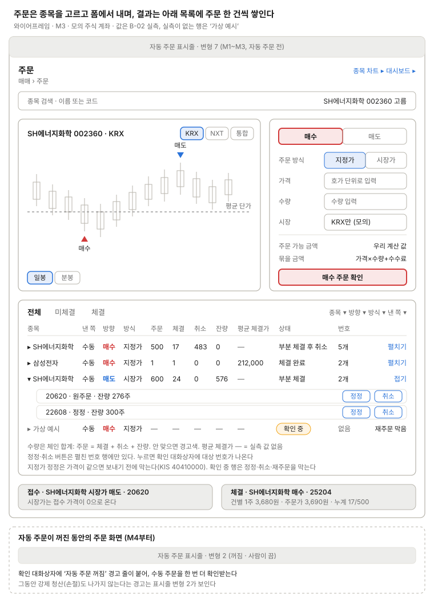

주문
종목을 고르고 폼에서 매수·매도를 내며, 결과는 아래 목록에 주문 한 건씩 쌓인다. 정정으로 번호가 나뉜 주문도 목록에서는 한 행이다.

목록의 한 행은 정정으로 번호가 나뉜 주문 한 건이다. 접힌 행에는 "펼치기"만 두고, 정정·취소 버튼은 펼친 번호 행마다 둬서 어느 번호에 나가는지 보인다. 수량은 주문 = 체결 + 취소 + 잔량이고, 상태 이름은 상태 표시명을 따른다(일부 체결 뒤 취소는 "부분 체결 후 취소"). 값은 B-02 실측 주문이고, 평균 체결가 —는 실측 값이 없는 칸이다(화면은 번호별 체결 금액 합 ÷ 체결 수량으로 계산한다). 맨 아래 "가상 예시" 행은 확인 중(UNKNOWN) 모양이다. 종목은 맨 위 검색 칸에서 고르고, 차트의 시장(KRX·NXT·통합)과 봉(일봉·분봉)은 버튼으로 바꾼다. 매수는 빨강, 매도는 파랑이다.
"매수 주문 확인"과 번호 행의 정정·취소는 확인 대화상자를 연다. 요약은 그 페이지 표의 매수·매도 주문, 정정, 취소 행을 따른다. 자동 주문이 꺼진 동안(M4부터)은 표시줄이 변형 2가 되고, 대화상자의 "꺼짐일 때만" 경고 줄로 수동 주문을 한 번 더 확인받는다.
쓰는 공통 UI
화면 틀 · 자동 주문 표시줄 (변형 7, 꺼진 동안 변형 2) · 확인 대화상자 · 상태 표시명 (주문) · 주문 체인 행
상태
| 상태 | 보일 것 |
|---|---|
| 종목을 고르기 전 | 검색 칸만 켜지고 차트·폼은 비활성 |
| 불러오는 중 | 차트·목록 자리에 뼈대, 보내기 버튼 비활성 |
| 조회 오류 | 마지막 값을 두고 목록 위에 오류 한 줄 + 다시 시도 |
| 빈 목록 | 탭·필터는 두고 "오늘 낸 주문 없음" 한 줄 |
| 보내는 중 (SUBMITTING) | 번호 칸 "없음", 정정·취소 버튼 없음 |
| 확인 중 (UNKNOWN) | 경고색 배지, 정정·취소·재주문 막음. 조회로 확정되면 바뀐다 |
| 거부·전송 실패 | 상태 이름 + KIS 메시지 또는 리스크 검사 이유 한 줄 |
| 장 마감 소멸 (미확인) | 마감 뒤 조회 전까지 잔량 옆에 "소멸 확인 전". 통보 여부는 B-02 확인 중 |
| 정규장 밖 | 보내기 버튼 비활성 + "정규장만 받는다"(가정: 시간외는 모의에서 거부) |
| 실시간 끊김·재연결 중 | 표시줄 변형 5 + 목록 위에 "마지막 통보 hh:mm:ss 기준" |
| 체인 합계 불일치 | 그 체인 행을 경고색으로, 일별 조회로 바로잡는 중 표시 |
화면 규칙
- 목록: 정정으로 생긴 번호 체인을 한 주문으로 묶고, 번호 이력은 펼쳐서 본다(제안). 수량은 처음 주문 수량 = 체결 + 취소 + 잔량의 합
- 가격: 주문가와 체결가를 나눠 보인다. 유리한 지정가는 당시 시장가로 체결된다. 시장가의 접수 가격은 0이다
- 정정 폼: 지정가는 가격을 바꿔야 정정된다(같으면 보내기 전에 막는다. KIS는 거부
40410000) - 알림: 접수와 체결이 따로, 약 0.1초 간격으로 온다
- 집행 시장: 모의에서 NXT 주문은 거부된다
- 주문 가능 금액: 원장 가용 현금 − 진행 중 매수 묶음 + 미반영 매도 체결 순액(KIS 값이 아님)
- 미확인: 장 마감 소멸 통보, 시간외 거부(B-02 시험 중)
정할 것
- 주문 가능 금액에 KIS
ord_psbl_cash는 나란히 보이지 않는다. 우리 계산 값만 보이고 KIS 값은 대사 결과에서 비교한다(결정 2026-10-16) - 매수·매도 색: 매수·상승 빨강, 매도·하락 파랑(결정 2026-10-16). 토큰 값은 코드에서 정한다
- 시장가 매수를 폼에서 허용할지(묶을 금액이 상한가 기준이 된다. M2에서 결정)
- 체결 알림을 접수와 합칠지